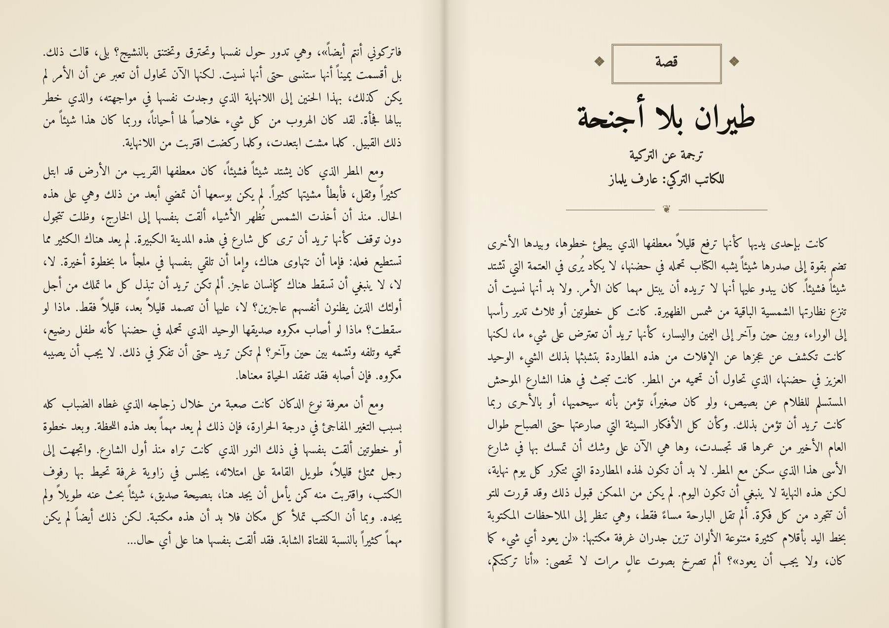
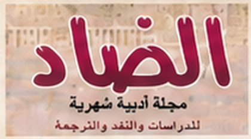

Kendi Kaleminden
Bir Şiir, Bir Hikâye
Arif Yılmaz akademik çalışmalarının yanında şiir ve hikâye de yazar. Bu sayfada şiirlerinden ve hikâyelerinden seçilmiş birer metin yer almaktadır.
Şiir
şu üç günlük dünyamın
üç bentlik öyküsü
1. gün
kutsal sevgiler taşıdım hep
kutsalı kuşananlardan
emanet gönüllere
hicran gününe yapılan yeminlere inat
2. gün
kıymetsizliğin pazarına çıkış
ümitlerin yitirilişi aldanışların uçurumlarında
gelinciklerin ince kelebeklerin
bugün ise kır çiçeklerin
bilmem ki yarın hangi değişimin kıskacında
3. gün
sabah dolaylarında gözyaşlarıyla tükeniş
şebnemdeki heyecandan mülhem
Kanatsız Uçmak
طيران بلا أجنحة
Hikâyenin Türkçe aslı ve Arapça çevirisi alt alta yer almaktadır.


el-Dâd, HalepBir eliyle hızını yavaşlatan mantosunu hafifçe yukarıya çeker gibi yapıyor, bir eliyle de kucağında taşıdığı, gittikçe koyulaşan karanlıkta pek de seçilemeyen kitaba benzeyen bir şeyi sıkıca göğsüne bastırıyordu. Ne olursa olsun onun ıslanmasını istemiyor gibi bir hâli vardı. Öğle güneşinden kalma güneş gözlüğünü çıkarmayı unutmuş olmalıydı. İki üç adımda bir başını geriye ve arada bir de sağa sola çevirmesiyle bir şeylere itiraz etmek ister gibi yapıyor, fakat bu takipten bir türlü kurtulamadığını, yağmurdan korumaya çalıştığı kucağındaki biricik varlığına sarılarak belli ediyordu. Kimsesiz, karanlığa teslim olmuş bu sokakta onu koruyacağına inandığı, daha doğrusu belki de inanmak istediği küçük de olsa bir parıltı arıyordu. Ömrünün son bir yılında sabahlara kadar mücadele ettiği bütün kötü düşünceler sanki cisimleşmiş, yağmurla birlikte sessizleşen bu Elem Sokağında artık onu yakalamak üzereydi. Her gün yaşanan bu kovalamada, elbette bir son olacaktı. Ama bu son bugün olmamalıydı. Her türlü düşünceden soyutlanmaya daha yeni karar vermişken, bunu kabul etmek mümkün değildi. Daha dün akşam “artık hiçbir şey eskisi gibi olmayacak, olmamalı” dememiş miydi, çalışma odasının duvarlarını süsleyen çok çeşitli ve renkli kalemlerle yazılmış el yazılı notlara bakarak? “Ben sizleri bıraktım, siz de artık beni bırakın” diye yüksek sesle sayısız defa haykırmamış mıydı, döne döne, yana yana, hıçkırıklara boğularak? Elbette demişti. Hem de öyle yemin etmişti ki, unuttuğunu bile unutacaktı. Ama öyle olmadığını şimdi karşı karşıya kaldığı ve birdenbire usuna düşen sonsuzluk özlemiyle ifade etmeye çalışıyordu. Her şeyden kaçmak, onun için bazen kurtuluş olmuştu. Bu da belki öyle bir şeydi. Yürüdükçe uzaklaşacak, koştukça da sonsuzluğa yaklaşacak.
Hızını gittikçe artıran yağmurla, oldukça yere yakın duran mantosunun iyice ıslanması ve ağırlaşması yürümesini bir hayli yavaşlatmıştı. Bu hâliyle daha fazla gidemezdi. Güneşin varlıkları belirginleştirmeye başlamasıyla kendini dışarıya atmış, hiç durmadan, koca şehrin her sokağını görmek istercesine dolaşmıştı. Artık, yapabileceği çok fazla bir şey de yoktu. Ya orada yığılıp kalacak ya da son bir hamleyle kendini bir sığınağa atacaktı. Hayır, hayır oracığa çaresiz bir insan gibi düşmemeliydi. O, her şeyini kendini çaresiz sananlara karşı feda etmek istememiş miydi? Hayır, biraz daha, az daha dayanmalıydı. Ya düşerse, ya kucağındaki adeta bir bebek gibi tuttuğu, koruduğu, sarmaladığı, ara sıra kokladığı biricik dostuna bir şey olursa. Bunu düşünmek bile istemiyordu. Ona bir şey olmamalıydı. Olursa yaşam anlamını yitirebilirdi.
Hava sıcaklığının ani değişim göstermesiyle tamamen buğulanmış camlarından ne dükkânı olduğunu anlamak zor olsa da artık bu dakikadan sonra bunun da pek önemi yoktu. Bir iki adımdan sonra sokağın başından beri gördüğü aydınlığın içine kendini adeta atıverdi. Kitaplıklarla çevrili odanın bir köşesinde oturan hafif tombul, bütün tombulluğuna rağmen oldukça uzun boylu adama doğru yönelerek, sanki uzun zamandır aradığı ve bulamadığı bir şeyi bir arkadaşının tavsiyesiyle burada bulabileceğini ümit eden bir edayla yaklaştı. Bütün her taraf kitaplarla dolu olduğuna göre burası bir kitapçı dükkânı olmalıydı. Aslında genç kız için bunun da pek önemi yoktu. Kendini şuracığa atmıştı ya...
Burası, çok da düzenli bir yer gibi görünmüyordu. Duvar boyu sıralanmış raflardaki kitaplar yeni eski, küçük büyük veya türüne bakılmaksızın öylesine sıralanmış gibi duruyordu. Bazı ansiklopediler en üst raflara alt alta üst üste istiflenmiş, bazılarının ise çok eski olmakla birlikte daha hiç kutusundan çıkarılmadığı hemen anlaşılıyordu. Genç kızın gözüne köşe kitaplıkta duran kırmızı ciltli bir kitap ilişti. Kitabın adını tam okuyamayınca öğleden kalma gözlüğünün hâlâ gözünde olduğunu fark etti. Bir hamlede gözlüğünü çıkarmak istedi. Fakat bunu yapmaktan vazgeçti. Odanın en tenha köşesindeki masasında oturan adam buna pek bir anlam veremedi. Yağmurlu bir havada, üstelik akşam vakti güneş gözlüğü ile bir kadın geliyor, o bundan bir türlü vazgeçmek istemiyor. Adam, belki de bir rahatsızlığı vardır diye düşündü. Ama biraz önce çıkarmak istemişti, acaba neden vazgeçti diye şöyle bir genç kadını süzdü. Kadının bitkin hâline ve ıslanmışlığına bakılacak olursa, uzun bir süredir yürüyor olmalıydı. Topuklarına kadar gelen, yağmurla birlikte bazı yerleri koyulaşmış, göğsünde tuttuğu kitaba benzer şeyin koruduğu yere bakılacak olursa açık gri ve çizgili mantosu, boynundaki siyah fuları ile pek de bu mahallenin insanına benzemiyordu. İki eliyle göğsüne doğru sıkıca bastırdığı kitaba benzer nesnesiyle ve başının hafiften yana ve öne eğik duruşuyla mahzun bir hâli vardı. Burayı nereden buldu, şimdi burada ne arıyor, şimdi benden ne isteyecek gibi birçok soruyu zihninde peşi sıra sıraladı.
Genç kız, önce bir “Merhaba” dedi. Satıcı, camlara çarparak ahenkli bir ses çıkaran, uzun süre dinlendiğinde bir musikiyi andıran yağmurun notalarını kaçırmak istemezcesine bu söze pek aldırış etmedi. Zaten dışarıda yağmur olmasaydı daha önce hiç görmediği bu hanımefendi acaba buraya uğrar mıydı? Büyük bir ihtimalle şiddetini aniden artıran yağmurun hezimetine uğramış, bir sığınak, bir dayanak aramış ve ilk gördüğü korunaklı bir yere girmişti. Bu böyle olmayabilirdi de. Belki de çok değerli bir şey olduğu sımsıkı sarılmasından belli olan kucağındaki kitabı satmak isteyen biriydi. Olsun, her şeyden önce o bir hanımefendiydi. Bu düşüncesini ona belli etmemeliydi. Bütün bu gelgitler içerisinde hanımefendinin merhabasına daha yeni cevap verebildi.
– Buyurun. Size nasıl yardımcı olabilirim? Eğer o kitabı satmak istiyorsanız, …………. . Adam bir an için onu kitap zannederek sordu.
Genç kız, her şey kendine ait olsa da, en değerli varlığını kaybetme korkusuna kapıldığını belli etmek istercesine, satıcının sözü tamamlamasına izin vermedi.
– Hayır, hayır!!! Eeee, ben size bir şey sormak istiyorum, deyiverdi.
– Bir kitap arıyorum. “Mutluluğun Sırları”, yazarı, eeee, ………… şeydi. Her zaman sorduğum bir kitap olmasına rağmen, işte insan birden hatırlayamıyor. Şey, “Adonis……”
– İlginç. Biliyor musunuz, siz bu kitabı bugün soran dördüncü kişisiniz. Üstelik hepsi de bayan. Bu kitabın baskısının tükeneli uzun yıllar oldu. Artık yeni baskısı yok. Buyurun oturmaz mısınız? Üstelik çok ıslanmışsınız. Buyurun, buyurun isterseniz şöyle sobanın yanına geçin. Biraz olsun ısının.
Genç kız, bu kısa diyalogdan sonra gözlüğünü çıkarmak için bir daha teşebbüs etti. Bu şekilde konuşmaya devam etmenin çok da hoş karşılanmayacağını çok iyi biliyordu. Çıkarırsa, acaba adam ağlamaktan gözlerinin kızardığını fark eder miydi? Acaba bütün çirkinlikleri örten karanlık gibi yağmur da onu bütün kirlerinden arındırmış mıydı? Artık bunun da bir önemi yoktu. Nasıl olsa yağmurda ıslanmış, bu belki de onu örtebilirdi.
Genç kız bir an için kaybettiğini düşündüğü bütün öz varlığının izini burada bulacakmış gibi hissetti. Ona göre kitapla ilgili bütün detayları bilen bu adam mutluluğun bütün sırlarına vakıf olmalıydı. Kitabı bulamamıştı. Olsun. Nasıl olsa onu çok iyi okumuş, belki ezberlemiş bir kişi vardı karşısında. Ondan rica eder, bu sırları bir de onun için anlatırdı. Ya her şey düşündüğü gibi değilse. Sattığı her şeyin tadına bakmayan bir manav gibi, bir bakkal gibi o da bu kitabı ya hiç okumamışsa. Ya da okumuş, ama onun gibi hâlâ mutluluk peşinde koşuyorsa. Hayır, bu öyle olamazdı, olmamalıydı. Hiç bilmediği, duymadığı, görmediği, gelmediği bu yer ona nasıl bu hisleri vermişti? Yoksa “Ben sizleri bıraktım, sizler de beni bırakın” mı demeli, dönüp bir daha arkaya bakmadan gitmeli miydi? Her akşam ve sabah diline pelesenk olan “en kötü karar kararsızlıktan iyidir” sözüne şimdi itibar edemiyordu. Zaten son zamanlarda çareyi çaresizlikte bulmamış mıydı? Oysa o, bu ana kadar çaresizlik girdabında dönüp durmanın ne demek olduğunu bile anlayamıyordu. Şimdi ise karanlık bir sokakta ıssız bir kitapçıda tozlu kitapların arasında bu kimsesizliğinin reçetesini bulmak istiyordu.
Genç kız, fakülteyi bitireceği şu son günlerinde yaşadıklarına bir anlam veremiyordu. Oysa o, daha bir yıl öncesine kadar edebiyat öğretmenliği yapacağı günleri hasretle bekleyen, nerede ve kim olduklarını bilmediği meçhul öğrencilerine “kavuşmamıza az kaldı, biraz daha sabredin, geliyorum” diye mektuplar yazan, sevdası engin bir kız değil miydi? Şimdi bu engin sevdasında kendisi boğulmak üzereydi.
O, kısa bir süre öncesine kadar bilmediği bu mekânda, belki de ilk defa gördüğü bu beyefendinin yanında garip bir şekilde iç huzura doğru yol aldığını fark etti. Bütün zihin karmaşası içerisinde bir türlü anlamlandıramadığı, biçimlendiremediği, isimlendiremediği bu huzura kendini tamamen teslim etmek istedi. Her geçen dakikayla birlikte uzun bir süredir onu sımsıkı saran bunalımlı ruh hâlinin, bütün beklentilerinin, bütün tedirginliklerin kapıda kaldığını hissedercesine, uzun bir süredir aradığı, şimdi ise adeta bir sağanak gibi yağdığını düşündüğü bütün benliğini kuşatan bu “mabet huzuru”nun altında ıslanmak, her zerresiyle yaşamaya çalışmak onun son tercihi oldu.
Genç kız, kalp ağrılarını dindiren bu iç huzurla aynı anda başka yan tesirlere yakalanma endişesini de yaşamaya başladı. Çarelerde bulduğu bir başka çaresizlik hep onun alın yazısı olmamış mıydı? Bazen de kahvenin içerisindeki “hel” gibi, işte bu benim hiç mi hiç aramadığım bir lezzet dedirten bazı şeyler, zamanla onda bağımlılık yapmamış mıydı?
Yarım saat geçmesine rağmen yağmur genç kızın biraz daha kitapçıda kalmasını istercesine bütün şiddetiyle yağmaya devam ediyordu. Kitapçı, arada bir etrafın aydınlığını pekiştiren şimşeğe ve ortalığı gürültüye boğan gök gürlemesine aldırış etmeden kendi iç dünyasına kapanmış genç kıza bir iki sual yöneltmek istedi.
Ama bir türlü yarım saattir zihnini altüst eden düşünce helezonlarından kurtulup da buna teşebbüs edemedi. Daha yeni demlediği çaydan bir bardak ikram etmek isterken söylediği “siz de içer misiniz?” sözü bu başlangıcı yapmaya yetmedi.
Konuşmaktansa zihinsel devinim içerisinde kalmayı sevenler gibi yaptılar. Sözün devamını getirecek hiçbir cümleyi kuramadılar. Her teşebbüsün boşa çıkmasına üzülmeden, boğazda düğümlenip kalan her yarım cümlenin peşinden koşmadan kendilerini saniyelere bıraktılar.
Genç kıza aradığı kitabı vermek ya da duymak istediklerini söylemek istedi. Bunu yapabilseydi ona “yaşamını ümitsizlik yağmurundan koruyamazsan, sırtındaki ıslak manto gibi taşıması sana zor gelir” diyecekti.
“Bunu senin için saklamıştım, artık o gerçek sahibini buldu” demeye bile cesaret edemeden kitapçı, çekmecesinde, başucu kitabı olarak tuttuğu ciltli küçük boy bir kitabı genç kıza uzattı.
Çocukluğundan beri kitaplarla iç içe büyümüş olmasına rağmen, hemen her türlü kitaba aşinalığına rağmen genç kızın böyle bir mecmuayı ilk defa eline aldığı her hâlinden belli oluyordu. Adam, genç kızı bir zırh gibi koruyacağına inandığı bu küçük kitabın gerçek sahibine ulaştırmaktan duyduğu mutluluğu bile onunla paylaşamadı. Bu derin iç buruntusuyla kızın çok kısa teşekkürünü bile duymadı.
Hâline bakılacak olursa, yaralanmış, kanadı kırılmış bir kuş gibi yere düşmüş, seke seke buraya kadar gelmiş bu kızcağızı yeniden uçurmak onun şimdiye kadar hiç de hayal etmediği bir şeydi.
Genç kız eline aldığı küçücük kitapla yıllardır peşinde koşup da bir türlü bulamadığı gizli hazinenin kapısını bir an için araladığını hissetti.
Bu adam onun için neydi? Bir mürşit mi? Hayır. Bir sevgili mi? Hayır. O, maşukunu çoktan kaybetmiştir. Üstelik isteyerek.
O, meçhul kitapçıda insanın çoğu zaman babada bulamadığı merhameti, annede aramadığı cesareti, sevgiliden beklemediği diğerkâmlığı, kardeşte asla göremediği paylaşımı bulmuştu.
Darmadağınık zihnine mütenasip bir hâl almak istercesine yağan yağmuru aldırmadan kendini karanlığın kucağına bırakan genç kız “not defterinizi unuttunuz?” sözünü bile duyamadı veya duymak istemedi.
Şimdiye kadar bir kutsal kitap gibi yanından hiç ayırmadığı, en kıymetli addettiği varlığını orada bırakmak isteyen genç kız, bu mübadele düşüncesiyle simsiyah sokakta kanatsız uçup gitti.
طيران بلا أجنحة
عارف يلماز
كانت بإحدى يديها كأنها ترفع قليلاً معطفها الذي يبطئ خطوها، وبيدها الأخرى تضم بقوة إلى صدرها شيئاً يشبه الكتاب تحمله في حضنها، لا يكاد يُرى في العتمة التي تشتد شيئاً فشيئاً. كان يبدو عليها أنها لا تريده أن يبتل مهما كان الأمر. ولا بد أنها نسيت أن تنزع نظارتها الشمسية الباقية من شمس الظهيرة. كانت كل خطوتين أو ثلاث تدير رأسها إلى الوراء، وبين حين وآخر إلى اليمين واليسار، كأنها تريد أن تعترض على شيء ما، لكنها كانت تكشف عن عجزها عن الإفلات من هذه المطاردة بتشبثها بذلك الشيء الوحيد العزيز في حضنها، الذي تحاول أن تحميه من المطر. كانت تبحث في هذا الشارع الموحش المستسلم للظلام عن بصيص، ولو كان صغيراً، تؤمن بأنه سيحميها، أو بالأحرى ربما كانت تريد أن تؤمن بذلك. وكأن كل الأفكار السيئة التي صارعتها حتى الصباح طوال العام الأخير من عمرها قد تجسدت، وها هي الآن على وشك أن تمسك بها في شارع الأسى هذا الذي سكن مع المطر. لا بد أن تكون لهذه المطاردة التي تتكرر كل يوم نهاية، لكن هذه النهاية لا ينبغي أن تكون اليوم. لم يكن من الممكن قبول ذلك وقد قررت للتو أن تتجرد من كل فكرة. ألم تقل البارحة مساءً فقط، وهي تنظر إلى الملاحظات المكتوبة بخط اليد بأقلام كثيرة متنوعة الألوان تزين جدران غرفة مكتبها: «لن يعود أي شيء كما كان، ولا يجب أن يعود»؟ ألم تصرخ بصوت عالٍ مرات لا تحصى: «أنا تركتكم، فاتركوني أنتم أيضاً»، وهي تدور حول نفسها وتحترق وتختنق بالنشيج؟ بلى، قالت ذلك. بل أقسمت يميناً أنها ستنسى حتى أنها نسيت. لكنها الآن تحاول أن تعبر عن أن الأمر لم يكن كذلك، بهذا الحنين إلى اللانهاية الذي وجدت نفسها في مواجهته، والذي خطر ببالها فجأة. لقد كان الهروب من كل شيء خلاصاً لها أحياناً، وربما كان هذا شيئاً من ذلك القبيل. كلما مشت ابتعدت، وكلما ركضت اقتربت من اللانهاية.
ومع المطر الذي كان يشتد شيئاً فشيئاً، كان معطفها القريب من الأرض قد ابتل كثيراً وثقل، فأبطأ مشيتها كثيراً. لم يكن بوسعها أن تمضي أبعد من ذلك وهي على هذه الحال. منذ أن أخذت الشمس تُظهر الأشياء ألقت بنفسها إلى الخارج، وظلت تتجول دون توقف كأنها تريد أن ترى كل شارع في هذه المدينة الكبيرة. لم يعد هناك الكثير مما تستطيع فعله: فإما أن تتهاوى هناك، وإما أن تلقي بنفسها في ملجأ ما بخطوة أخيرة. لا، لا، لا ينبغي أن تسقط هناك كإنسان عاجز. ألم تكن تريد أن تبذل كل ما تملك من أجل أولئك الذين يظنون أنفسهم عاجزين؟ لا، عليها أن تصمد قليلاً بعد، قليلاً فقط. ماذا لو سقطت؟ ماذا لو أصاب مكروه صديقها الوحيد الذي تحمله في حضنها كأنه طفل رضيع، تحميه وتلفه وتشمه بين حين وآخر؟ لم تكن تريد حتى أن تفكر في ذلك. لا يجب أن يصيبه مكروه. فإن أصابه فقد تفقد الحياة معناها.
ومع أن معرفة نوع الدكان كانت صعبة من خلال زجاجه الذي غطاه الضباب كله بسبب التغير المفاجئ في درجة الحرارة، فإن ذلك لم يعد مهماً بعد هذه اللحظة. وبعد خطوة أو خطوتين ألقت بنفسها في ذلك النور الذي كانت تراه منذ أول الشارع. واتجهت إلى رجل ممتلئ قليلاً، طويل القامة على امتلائه، يجلس في زاوية غرفة تحيط بها رفوف الكتب، واقتربت منه كمن يأمل أن يجد هنا، بنصيحة صديق، شيئاً بحث عنه طويلاً ولم يجده. وبما أن الكتب تملأ كل مكان فلا بد أن هذه مكتبة. لكن ذلك أيضاً لم يكن مهماً كثيراً بالنسبة للفتاة الشابة. فقد ألقت بنفسها هنا على أي حال...
لم يكن المكان يبدو مرتباً كثيراً. كانت الكتب على الرفوف الممتدة على طول الجدران مصفوفة كيفما اتفق، جديدها وقديمها، صغيرها وكبيرها، دون نظر إلى نوعها. بعض الموسوعات كُدّست في أعلى الرفوف بعضها فوق بعض، وكان واضحاً للوهلة الأولى أن بعضها، على قدمه، لم يخرج من علبه بعد. لفت نظر الفتاة الشابة كتاب ذو غلاف أحمر على رف الزاوية. ولما لم تستطع أن تقرأ عنوانه جيداً انتبهت إلى أن نظارة الظهيرة ما زالت على عينيها. أرادت أن تنزعها دفعة واحدة، لكنها عدلت عن ذلك. لم يفهم الرجل الجالس إلى مكتبه في أكثر زوايا الغرفة عزلة معنى ذلك: امرأة تأتي في جو ماطر، وفي المساء أيضاً، بنظارة شمسية، ولا تريد أن تتخلى عنها. فكّر الرجل أن بها علة ربما. لكنها أرادت أن تنزعها قبل قليل، فلماذا عدلت؟ وراح يتأمل الشابة. ويبدو من إعيائها وابتلال ثيابها أنها تمشي منذ وقت طويل. لم تكن تشبه أهل هذا الحي بمعطفها الرمادي الفاتح المخطط، الذي يصل إلى كعبيها، وقد اسودّت بعض مواضعه بالمطر، كما يظهر من الموضع الذي يحميه ذلك الشيء الشبيه بالكتاب على صدرها، وبوشاحها الأسود على عنقها. كان يبدو عليها الحزن بذلك الشيء الشبيه بالكتاب الذي تضمه بكلتا يديها إلى صدرها، وبرأسها المائل قليلاً إلى الجانب وإلى الأمام. وتتابعت في ذهنه أسئلة كثيرة: من أين عرفت هذا المكان؟ ماذا تبحث هنا الآن؟ ماذا ستطلب مني؟
قالت الفتاة الشابة أولاً: «مرحباً». لم يكد البائع يلتفت إلى هذه الكلمة، كأنه لا يريد أن تفوته نغمات المطر الذي يرتطم بالزجاج فيُحدث صوتاً متناغماً يشبه الموسيقى إذا أُصغي إليه طويلاً. ثم لولا المطر في الخارج، هل كانت هذه السيدة التي لم يرها من قبل ستمر من هنا؟ الأرجح أن المطر الذي اشتد فجأة قد غلبها، فبحثت عن ملجأ وسند، ودخلت أول مكان آمن رأته. وقد لا يكون الأمر كذلك. ربما كانت تريد أن تبيع الكتاب الذي في حضنها، ويبدو من تشبثها الشديد به أنه شيء ثمين جداً. ليكن، فهي قبل كل شيء سيدة، وعليه ألا يُظهر لها ما يدور في خاطره. ووسط كل هذا المد والجزر لم يستطع أن يرد على تحية السيدة إلا الآن.
– تفضلي، كيف يمكنني أن أساعدك؟ إذا كنتِ تريدين بيع ذلك الكتاب... سألها الرجل وقد ظنه كتاباً للحظة.
لم تدع الفتاة الشابة البائع يكمل كلامه، كأنها تريد أن تُظهر أنها، وإن كان كل شيء ملكاً لها، قد استبد بها الخوف من أن تفقد أغلى ما لديها.
– لا، لا!!! إيه... أريد أن أسألك عن شيء، قالت مسرعة.
– أبحث عن كتاب. «أسرار السعادة»، مؤلفه، إيه... ما اسمه... مع أنه كتاب أسأل عنه دائماً، لكن المرء ينسى فجأة. آه، «أدونيس...»
– غريب! أتعرفين أنكِ رابع شخص يسأل عن هذا الكتاب اليوم؟ وكلهم سيدات أيضاً. لقد نفدت طبعته منذ سنوات طويلة، ولم تعد له طبعة جديدة. تفضلي، ألا تجلسين؟ ثم إنكِ مبتلة كثيراً. تفضلي، تفضلي، اقتربي من المدفأة إن شئتِ، وتدفئي قليلاً.
بعد هذا الحوار القصير حاولت الفتاة الشابة مرة أخرى أن تنزع نظارتها. كانت تعرف جيداً أن مواصلة الكلام على هذه الحال لن تُستحسن. ولكن لو نزعتها، فهل سيلاحظ الرجل أن عينيها احمرّتا من البكاء؟ وهل طهّرها المطر من كل أدرانها، كما تستر العتمة كل قبح؟ لم يعد لهذا أيضاً أهمية. فقد ابتلّت بالمطر على أي حال، وربما ستر المطر ذلك.
أحست الفتاة الشابة للحظة أنها ستجد هنا أثر كيانها كله الذي ظنت أنها فقدته. فهذا الرجل الذي يعرف كل تفاصيل الكتاب لا بد أنه مطّلع على كل أسرار السعادة. لم تجد الكتاب. ليكن. فأمامها على أي حال رجل قرأه جيداً، وربما حفظه. ستطلب منه أن يروي لها هذه الأسرار مرة أخرى. ولكن ماذا لو لم يكن كل شيء كما تظن؟ ماذا لو لم يقرأ هذا الكتاب قط، كبائع الخضار أو البقال الذي لا يتذوق ما يبيع؟ أو قرأه، لكنه مثلها ما زال يركض خلف السعادة؟ لا، لا يمكن أن يكون الأمر كذلك، ولا ينبغي. كيف منحها هذا المكان، الذي لم تعرفه ولم تسمع به ولم تره ولم تأتِ إليه من قبل، كل هذه الأحاسيس؟ أم عليها أن تقول: «أنا تركتكم، فاتركوني أنتم أيضاً»، ثم تمضي دون أن تلتفت وراءها؟ لم تعد الآن قادرة على الوثوق بعبارة «أسوأ قرار خير من التردد» التي كانت تتردد على لسانها كل مساء وكل صباح. ألم تجد الدواء في الداء في الآونة الأخيرة؟ ومع ذلك فهي حتى هذه اللحظة لم تكن تفهم معنى أن يدور المرء بلا توقف في دوامة اليأس. أما الآن فهي تريد أن تجد وصفة لوحدتها هذه في مكتبة موحشة، بين كتب مغبرة، في شارع مظلم.
في هذه الأيام الأخيرة التي ستتخرج فيها من الكلية، لم تكن الفتاة الشابة تستطيع أن تجد معنى لما تعيشه. أليست هي الفتاة ذات الحب الواسع، التي كانت حتى قبل عام واحد تنتظر بشوق الأيام التي ستصبح فيها معلمة أدب، وتكتب رسائل إلى طلابها المجهولين الذين لا تعرف أين هم ولا من هم: «اقترب لقاؤنا، اصبروا قليلاً، إني آتية»؟ وها هي الآن على وشك أن تغرق في حبها الواسع هذا.
وانتبهت إلى أنها، في هذا المكان الذي لم تكن تعرفه قبل قليل، وبجانب هذا السيد الذي تراه ربما لأول مرة، تمضي على نحو غريب نحو سكينة داخلية. أرادت أن تسلم نفسها كلياً لهذه السكينة التي لم تستطع، وسط كل اضطراب ذهنها، أن تمنحها معنى أو شكلاً أو اسماً. ومع كل دقيقة تمر، كأنها تشعر أن الحالة النفسية الكئيبة التي أطبقت عليها منذ زمن طويل، وكل توقعاتها، وكل قلقها، قد بقيت خارج الباب، كان خيارها الأخير أن تبتل تحت «سكينة المعبد» هذه التي طالما بحثت عنها، والتي تظن الآن أنها تهطل كالوابل وتحيط بكيانها كله، وأن تحاول أن تعيشها بكل ذرة فيها.
ومع هذه السكينة الداخلية التي هدّأت آلام قلبها، بدأت الفتاة الشابة تعيش في الوقت نفسه قلق الإصابة بآثار جانبية أخرى. أليس يأس آخر تجده في كل علاج هو قدرها دائماً؟ وأحياناً، مثل حبّ الهال في القهوة، ألم تتحول بعض الأشياء التي تجعلها تقول: «هذه لذة لم أبحث عنها قط»، إلى إدمان مع الزمن؟
ورغم مرور نصف ساعة ظل المطر يهطل بكل شدته، كأنه يريد أن تبقى الفتاة الشابة في المكتبة وقتاً أطول. وأراد الكتبي أن يوجه سؤالاً أو سؤالين إلى الفتاة التي انطوت على عالمها الداخلي، غير آبهة بالبرق الذي يزيد المكان ضياءً بين حين وآخر، ولا بالرعد الذي يملأ الأرجاء ضجيجاً.
لكنه لم يستطع أن يتخلص من دوامات الأفكار التي قلبت ذهنه رأساً على عقب منذ نصف ساعة ليقدم على ذلك. ولم تكفِ عبارة «هل تشربين أنتِ أيضاً؟»، التي قالها وهو يريد أن يقدم لها كأساً من الشاي الذي أعده لتوه، لتكون تلك البداية.
تصرفا كمن يفضل البقاء في حركة الذهن على الكلام. لم يستطيعا أن يصوغا جملة واحدة تكمل الحديث. ودون أن يحزنا لإخفاق كل محاولة، ودون أن يلاحقا أنصاف الجمل التي انعقدت في حلقيهما، أسلما نفسيهما للثواني.
أراد أن يعطي الفتاة الشابة الكتاب الذي تبحث عنه، أو أن يقول لها ما تريد أن تسمعه. ولو استطاع لقال لها: «إن لم تحمي حياتك من مطر اليأس، ثقل عليك حملها كهذا المعطف المبتل على ظهرك».
ودون أن يجرؤ حتى على أن يقول: «لقد خبأته لكِ، والآن وجد صاحبه الحقيقي»، ناول الكتبي الفتاة الشابة كتاباً مجلداً صغير الحجم، كان يحتفظ به في درجه كتاباً أثيراً لا يفارقه.
ومع أن الفتاة الشابة نشأت بين الكتب منذ طفولتها، ومع أنها تألف كل أنواع الكتب تقريباً، كان واضحاً من كل حركاتها أنها تمسك مثل هذه المجموعة لأول مرة. ولم يستطع الرجل أن يشاركها حتى سعادته بإيصال هذا الكتاب الصغير، الذي آمن بأنه سيحميها كالدرع، إلى صاحبه الحقيقي. ومن شدة هذه الغصة الداخلية لم يسمع حتى شكرها القصير جداً.
كانت، على ما يبدو من حالها، كطائر جريح مكسور الجناح سقط على الأرض وجاء إلى هنا يقفز قفزاً. ولم يكن قد تخيل قط أن يعيد هذه المسكينة إلى الطيران من جديد.
وأحست الفتاة الشابة، والكتاب الصغير في يدها، أنها فتحت للحظة باب الكنز الخفي الذي ركضت خلفه سنوات ولم تجده.
ماذا كان هذا الرجل بالنسبة لها؟ مرشداً؟ لا. حبيباً؟ لا. فقد فقدت معشوقها منذ زمن بعيد، وبمحض إرادتها أيضاً.
لقد وجدت عند ذلك الكتبي المجهول الرحمة التي كثيراً ما لا يجدها المرء عند الأب، والشجاعة التي لا يبحث عنها عند الأم، والإيثار الذي لا ينتظره من الحبيب، والمشاركة التي لا يراها أبداً عند الأخ.
وألقت الفتاة الشابة بنفسها في حضن الظلام غير آبهة بالمطر الذي كان يهطل كأنه يريد أن يتخذ هيئة تشبه ذهنها المبعثر، فلم تسمع حتى عبارة «لقد نسيتِ دفتر ملاحظاتك؟»، أو لم ترد أن تسمعها.
الفتاة الشابة، التي أرادت أن تترك هناك ما لم تفارقه يوماً كأنه كتاب مقدس وما عدّته أثمن ما تملك، طارت بلا أجنحة في ذلك الشارع الحالك السواد، وفي خاطرها هذه المقايضة.